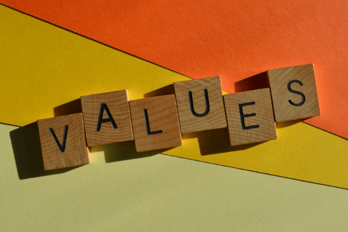

Always try your best to see the nuance in every situation. Avoid tunneling to "black and white" whenever possible. There's always 2 sides to every story or more than one solution to every problem. Take a step back to analyze the situation, then make your choice.
Try to be very careful about what you say to people. Think about how your words could be interpreted before saying them, as your words will not always be interpreted the way you intended. If you have to, re-read what that person said or ask them to clarify what they verbally said before giving your response.
Try not to think too far in the future if you can. There's nothing inherently wrong with thinking about the future, but nothing good has ever come out of thinking about it too much. Just focus on taking everything one day at a time. Sometimes, some things are just for your future self to handle instead of your present self, you can deal with it when you get there.
Don't bother in worrying about the opinions of others, except within reason. Many people love to have opinions on people/things they know nothing about, and the more ignorant they are, the more opinions they have. Many of the opinions made of you are going to be from people who don't know you at all. Just don't take stock in the opinions of strangers, whether online or in the real world.
Many of these values came about much later in my life, around the time I attended high school. By the time I entered high school, I noticed certain aspects of myself that I wanted to improve, such as my sensitivity to what others think about me, and how I used to interrupt others when they were talking to respond to what they just said (granted, I still do this, but thankfully much less now). Others came about out of necessity to protect myself, mostly to manage conditions I now have and must endlessly manage. So far, they've all worked out for me very well.
All of these values are important for different reasons. However, values 1 and 3 are extremely important because they're the ones I refer to when things aren't going well for me, I'll leave it at that. Without those two, I'd have a much harder time managing my conditions, and would very likely be relying on external help to manage them, which I'd prefer not to do. The ramifications of not adhering to all of my values (but more importantly 1 & 3) would be a regression of those aspects of myself at best, straight up dangerous for my health and safety at worst.